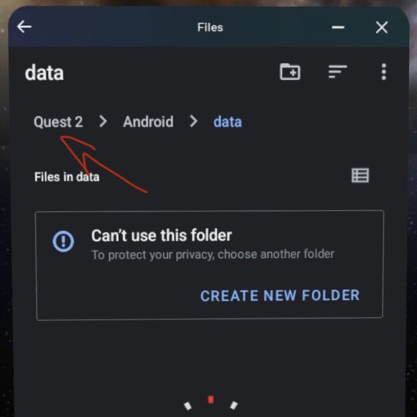

⁃ Echo VR previously in your account, I will be editing this to make a tutorial on how to do it without later!
⁃ A Quest 2, the 3 does work, but I haven't tested it with this method.
⁃ Developer mode - follow this guide I stole if you haven't already
ZArchiver - used for root access file management and installing IPAs
Activity Launcher - to open the Android Settings
Shizuku - to get root access
Echo VR files - Echo VR APK and OBB - the most important part!
1. Download Mobile VR Station (MVS) from the Quest store and open it
2. Click on “Configuration Wizard” > “Show All Options” > “Configure Scoped Storage”
3. Click on “Step 1: Request Access”
4. At the top, click on “Quest 2”, or in other words go to the base directory

5. Click on “Downloads”
6. Click on the enlarge icon on all the APKS (excluding the Echo VR APK if you haven't extracted it) then Continue and Install - clicking open doesn’t do anything, so just click done and move onto the next one until you've installed all of them!
7. All done! Close Mobile VR Station and open unverified sources to go onto the next step :3
1. Open Android Launcher
2. Scroll down until you find "Settings", if you have Roblox installed, it should be directly below it. Not “Android System”!
3. Click on it, and press the first item in the list, then "Launch Activity"
3. Scroll down to About Phone, then spam “Build Number” the bottom until you become a developer!
4. Go back and click on “System” then “Developer Options”.
5. Turn on USB Debugging if it’s off, then turn on Wireless Debugging below it and click on the text.
6. Put this tab into split screen and open Shizuku
7. Click on “Pair” in the wireless option, then enter the code on the second screen affter clicking on add new device.
You’re now able to access root files! Try to keep both these apps open (although don't worry if it's a pain, it's not the end of the world if they get minimised, just don't click the X!) and move on to the next step :)
1. Open ZArchiver while keeping Shizuku open and click on settings, then ROOT, then click on the first option and set it to “Shizuku”. Turn on all the toggles after that!
2. Go to your Downloads in ZArchiver while keeping everything open and find the zipped file, then extract it into your downloads.
3. Go into your newly created folder and install the Echo APK but clicking on it then install.
4. Once it's done installing, hold down on the OBB file and click copy (or move if you're confident, it’s just in case something goes wrong!)
5. Click on the top file named .. and go back to the directory where Downloads is. Navigate to “Android” > “obb” >
6. A prompt should pop up in Shizuku, click on Allow, then click on "obb" in ZArchiver again.
7. Go to “com.readyatdawn.r15” and click on the paste button in the bottom right (even if it says access denied)
If you can't find it, try launching Echo (it will instantly crash - click on Open App - NEVER Restore, which is the blue button) then moving the OBB file again!
8. There you go! You should have succesfully installed Echo VR!
Old broken stuff ignore all this
• Echo VR - the most important part! Download the APK file, or copy the torrent link and add it in FDM https://archive.org/details/echo-vr-v-4987566-apk-obb-quest-2 • FDM x64 - optional, to download the torrent file instead to if you’re Australian and have shitty internet https://www.freedownloadmanager.org/download-fdm-for-android.htm